0.1 配置环境
开始之前先说一下游戏的引擎版本：
Lua_v5.1 + Love 2d_v10.2
（通过 print 版本信息得到）
快速入门 Lua
开始修改前建议先观看两门教程。当然如果你有编程基础不看也行。
环境配置

二、安装 Lua 扩展
- 点击扩展 → 搜索 Lua → 安装 1.7 M 下载量的。
- 搜索 Local Lua Debugger → 安装
| 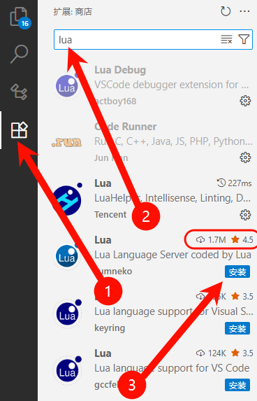 | 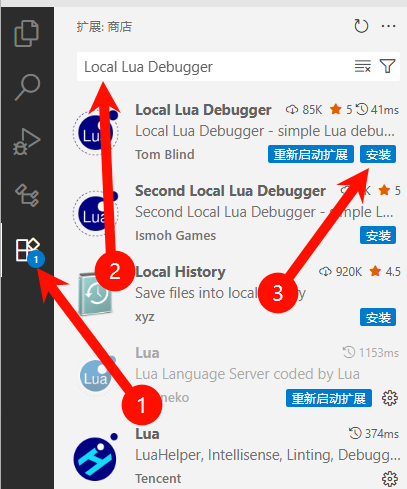 |
|---|
如果嫌这个 Lua 扩展卡顿，可以安装上面的 Lua，缺点就是无中文翻译
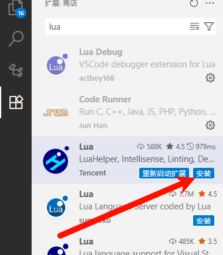
三、安装 Love 2d 引擎
-
下载资源里的 love 安装包 → 安装
-
按 win + r → 输入
sysdm.cpl
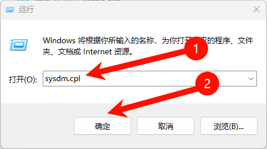 -
点击高级 → 环境变量 → 编辑 path 系统变量
| 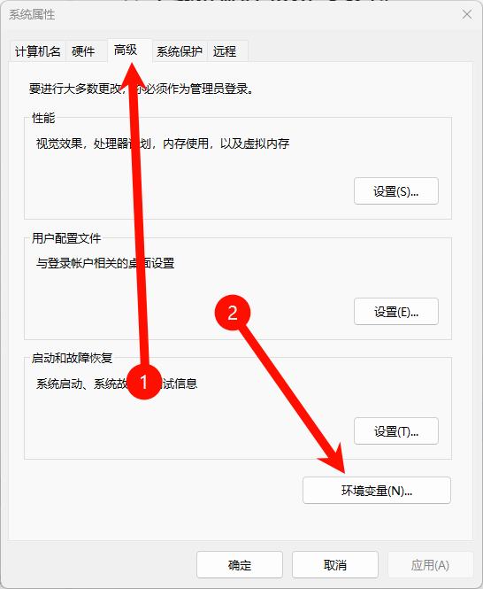 | 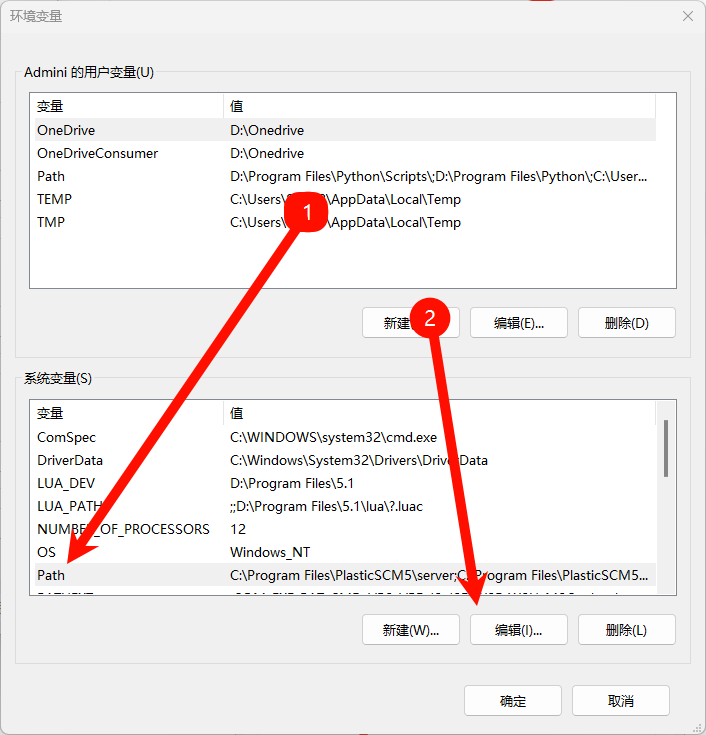 |
|---|
-
增加 love 的安装路径（图片路径仅供参考，请填写你的安装目录）
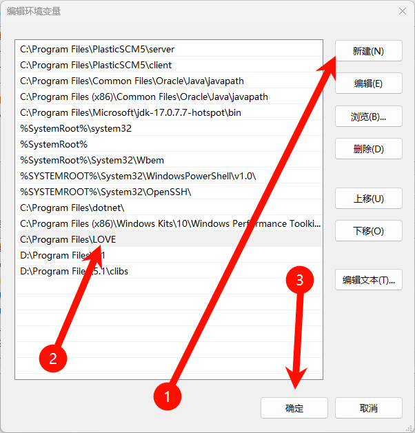 -
重启电脑 → 按 win + r 输入
cmd→ 终端输入love+ 回车，验证是否出现窗口，如果出现窗口则安装成功
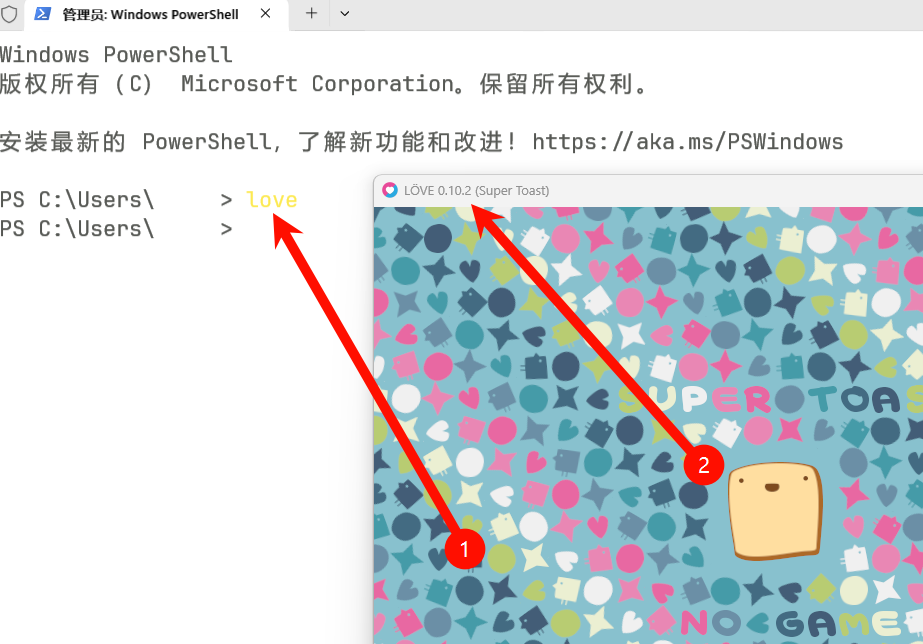
四、打开游戏文件夹
- 将要修改的游戏复制到一个文件夹内（可以自己创建） → 解压游戏
注意：路径不要有中文
推荐放在 D 盘
| 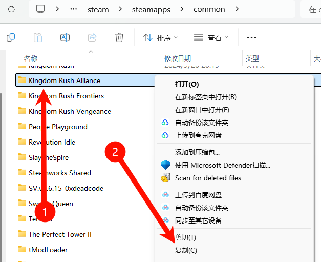 | |
|---|---|
| 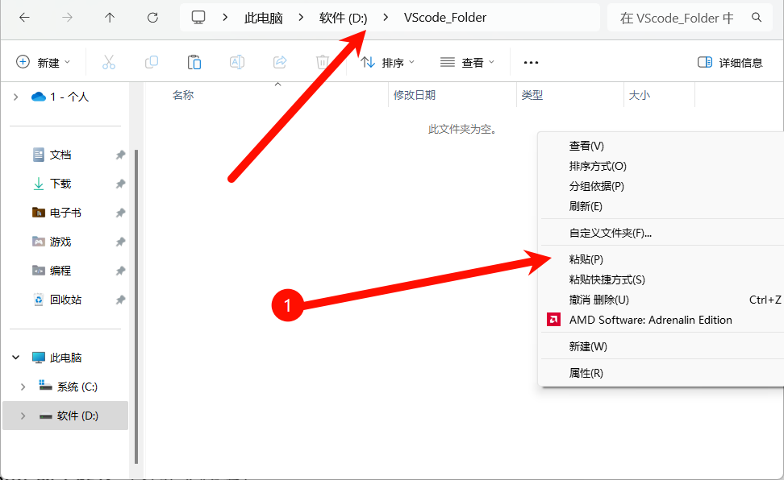 | 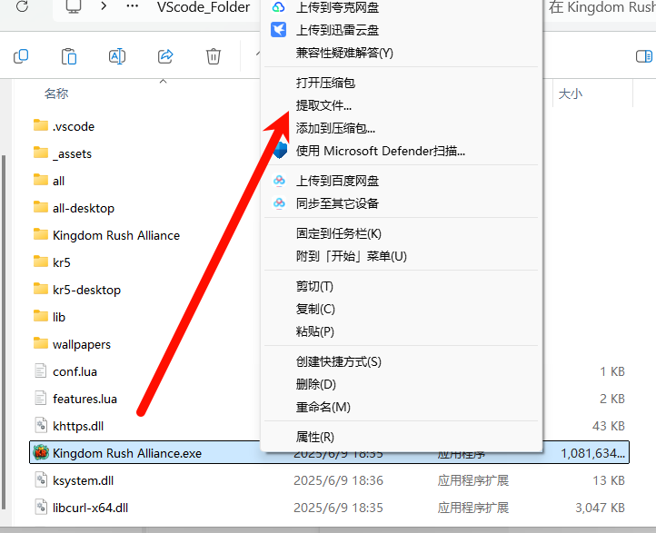 |
- 将解压出来的文件与游戏本体放到一起，如图二所示
| 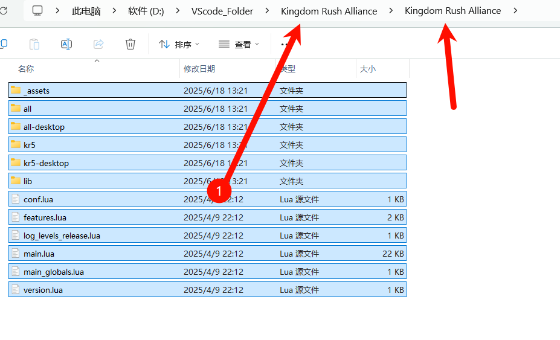 | 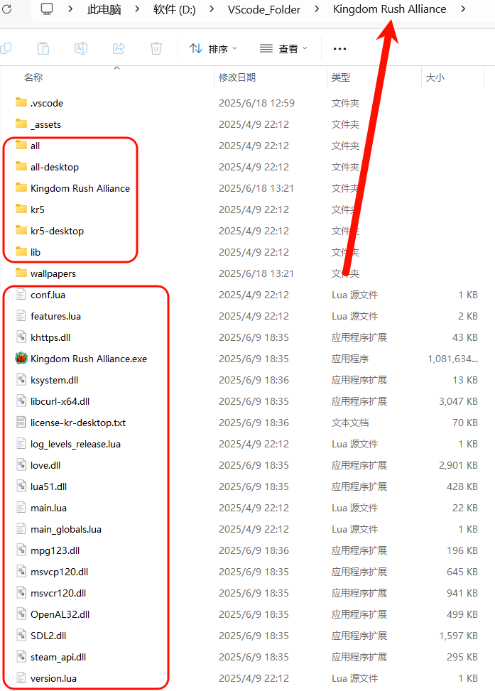 |
|---|
- 将文件夹增加到 VScode 的工作区（打开文件夹）
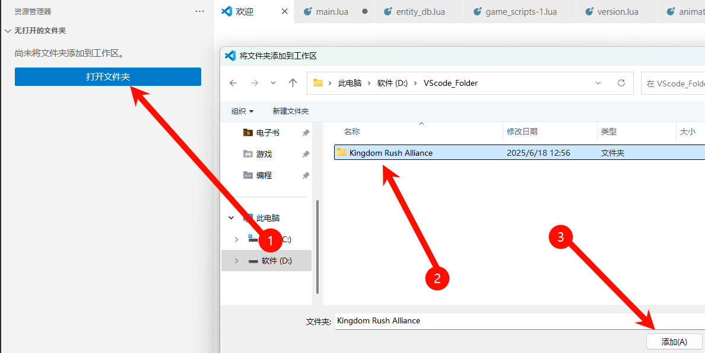
五、配置调试启动文件
- 点击运行和调试 → 创建 launch.json 文件 → 调试器选择 Local Lua Debugger
| 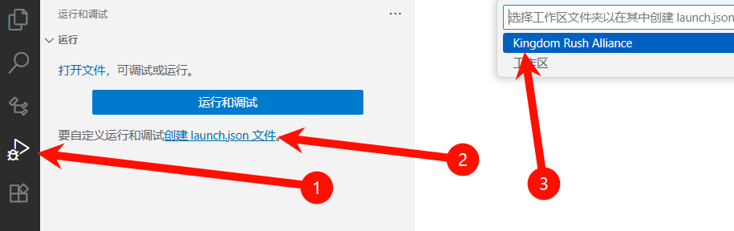 | 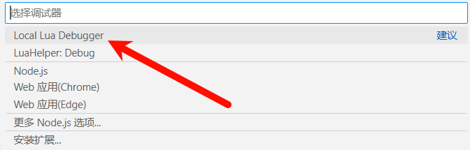 |
|---|
- 用以下代码替换启动文件 → 保存
{
"version": "0.2.0",
"configurations": [
{
"type": "lua-local",
"request": "launch",
"name": "Debug",
"program": {
"command": "love"
},
"args": [
".",
"debug"
]
},
{
"type": "lua-local",
"request": "launch",
"name": "Release",
"program": {
"command": "love"
},
"args": [
"."
]
}
]
}
- 反编译
main→ 向main增加一块代码 → 保存
增加到顶部：
if arg[2] == "debug" then
require("lldebugger").start()
end
如图即可：
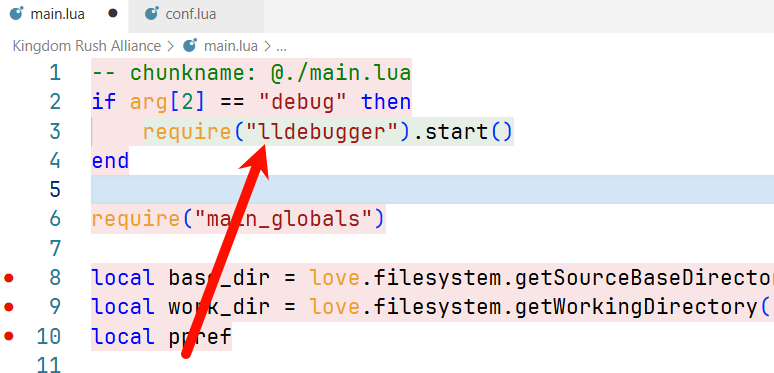
反编译见 0.2 工具 > 反编译软件
注意：反编译后需要用 output 的文件替换掉 main（以后反编译不再赘叙）
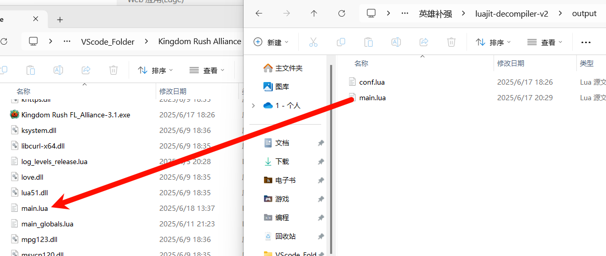
参考资料：

六、开启游戏的调试
- 打开
version→ 将build改为true
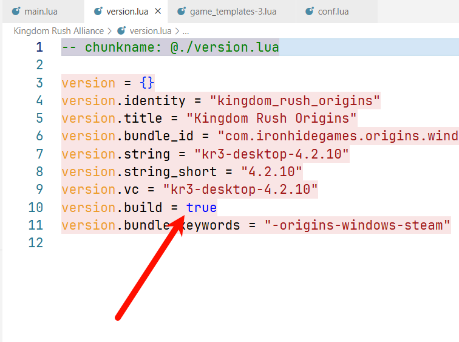
六、测试
-
打开运行与调试 → 选择模式：Debug 为调试模式（注调试模式会对性能造成较大影响）
Release 为正常模式（也就是禁用调试功能）
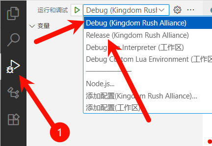 -
打一些断点（因为现在是测试所以尽量别打到函数内）
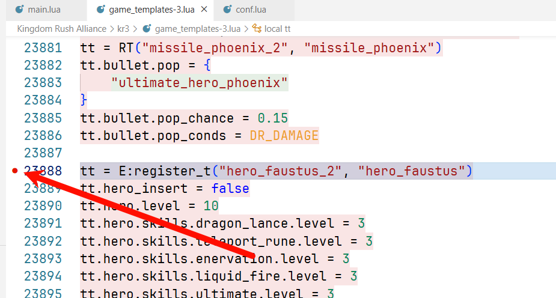 -
运行
注意：运行需要打开 steam（可关闭验证，不打算教防止盗版泛滥）
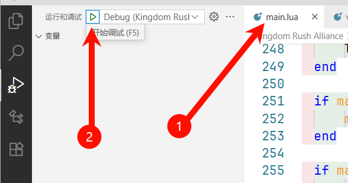 -
一切正常下游戏会在断点处暂停，同时可以看到变量、堆栈
完成后注意一下存档位置会在 C:\Users\你的用户名称\AppData\Roaming\LOVE 里面
壹、如果运行后卡住没反应：检查 conf → 关闭自带控制台（true 改 false）
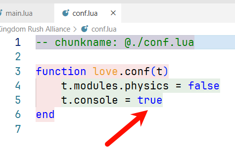
贰、如果在错误地方寻找 lua 文件可将 main 的 ppref 设为空字符串
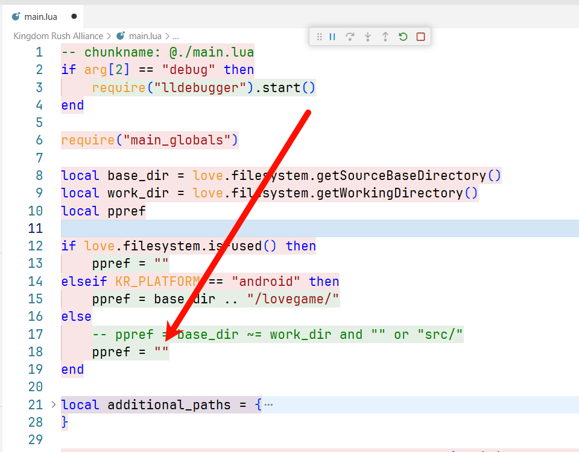
快捷键
| 快捷键 | 功能 | 快捷键 | 功能 |
|---|---|---|---|
/ |
禁用控制台快捷键 | Shift + l |
降低 100 生命 |
a |
时停 | n |
跳过这一波，同时秒杀所有敌人 |
s |
时停后逐帧运行 | Shift + n |
显示防御塔位创建顺序 |
d |
秒杀选择的单位 | m |
增加 1000 金币 |
Shift + d |
选择的单位血量设置为 10 % | Shift + m |
降低 1000 金币 |
Ctrl + d |
选择的单位血量回满 | ~ |
显示控制台 |
Shift + Ctrl + d |
删除选择的单位 | q w e r t y u i o p |
显示控制台后，召唤对应敌人 |
g |
显示网格区域 | j |
切换召唤路径 |
h |
显示路径 / 显示主路径 | [ ] |
敌人列表 上一页/下一页 |
z |
游戏速度 × 2 | = |
启用控制台连续出怪 |
Shift + z |
游戏速度 ÷ 2 | + - |
设置连续出怪间隔 |
x |
英雄获得 500 经验 | ; |
是否从随机子路径召唤 |
c |
高亮所有单位 | Shift + ; |
是否移除所有 mod（效果） |
Shift + c |
高亮攻击轨迹 | , |
统计进入关卡后的时间 |
v |
技能冷却时间清零 | . |
统计自第一次按这个按键到这次的时间，逗号重置 |
b |
高亮各种范围 | F9 F10 |
降低/增加 敌人速度，需要重新开始关卡 |
l |
增加 100 生命，不超过 1000 |
``
五代特有：
点击左上角金币图标，开启有 UI 的控制台（功能与快捷键相同）
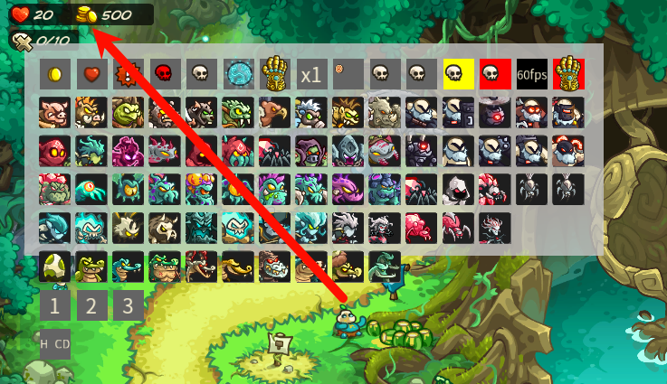
| 快捷键 | 功能 |
|---|---|
F5 |
伤害显示 |
F8 |
隐藏 UI |
F12 |
显示控制台 |
Ctrl + l |
直接胜利 |
可选
一、手动触发断点
设置后可按 0 手动触发断点
断点触发后可以直接右键修改变量的值、以及在调试控制台执行代码（必须使用调试模式运行）
- 找到
main的love.keypressed函数（直接搜索就行） - 函数内加块代码，同时增加断点
if key == "0" then
print("Break-point")
end
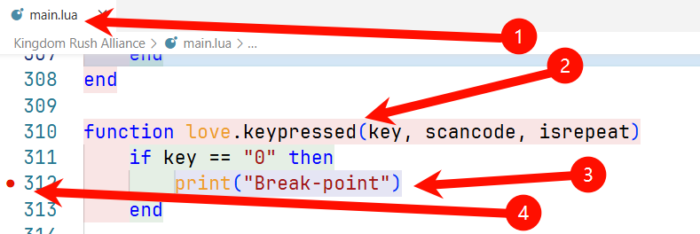
二、监视变量
注意：只有触发断点时监视才可用
game.game_gui.selected_entity |
被鼠标点击选择的单位的表会显示在内 |
game.store |
临时的表等（创建的单位等都在里面） |
game.game_gui |
游戏 GUI（进入关卡后的技能、金币、生命等） |
screen_map |
地图的 UI 与 GUI 等（英雄殿堂、升级等） |
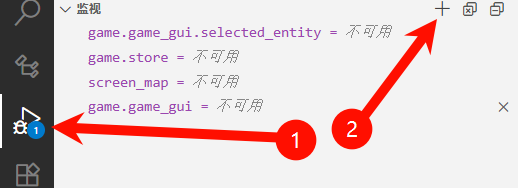
三、字体
- 打开设置（左下角）
- 点击文本编辑器 → 字体 → 输入
JetBrains Mono（请确保已安装）
| 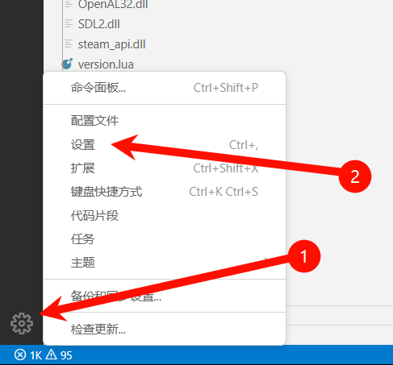 | 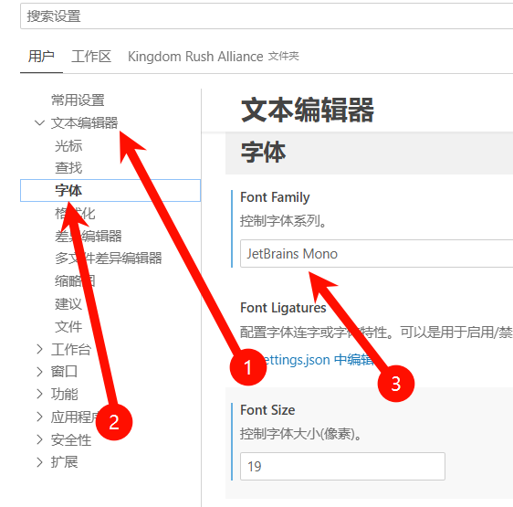 |
|---|